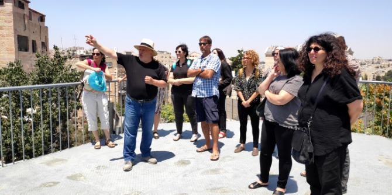
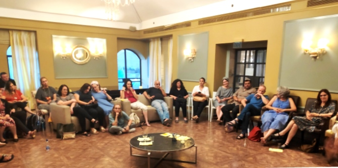
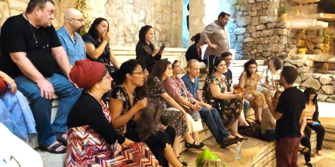

בראשית אוגוסט, כאשר החום הגדול בשיאו, החופש הגדול מחשב את קצו לאחור והמשק הישראלי מצוי בתרדמת הקיץ המסורתית, דווקא אז יצאו בוגרי מרכז מנדל למנהיגות בנגב לריטריט בוגרים בירושלים.
לא פחות משלושים ושישה בוגרים נטלו חלק בריטריט (מבדד בלשוננו) – ל"ו צדיקים ששברו שיא נוכחות של כל הזמנים בריטריט אחד. היו בריטריט נציגים כמעט מכל קבוצותינו בעבר, ומחזור א' של באר שבע רבתי קבע שיא שלא במהרה יישבר – 10 בוגרים.

תחנה ראשונה: מוזיאון קו התפר (בית תורג'מן). מנהל המוזיאון ומקימו, רפי אתגר, מציג את המקום תוך שהוא מותח ביקורת נוקבת על צעירי ימינו, על חוסר סובלנותם וחוסר סבלנותם. המוזיאון מתמקד בימים אלו בתערוכת פורטרטים של ירושלמים, ותוך כדי סיור בתערוכה נשמעו קולות שגרסו כי הדרומיים סובלניים יותר מעמיתיהם בבירה.
תחנה שנייה: מכון פוירשטיין. מנהל המקום, הרב רפי פוירשטיין, בנו של מייסד המכון ואבי השיטה, ראובן פוירשטיין (שהוא חתן פרס ישראל), פותח בתארו את אנשי המכון כקנאי דת לכל דבר בכל האמור בשיטתם לשילוב בעלי לקויות קוגניטיביות חמורות באופן לימודי וחברתי בחברה הנורמטיבית. תיאור ההישגים של השיטה מעורר השתאות, לא רק מפני שהוא מגובה בנתונים ובעובדות, אלא מפני שאנחנו מקבלים הזדמנות לצפות בשיעור הדגמה שמועבר ע"י אבנר שורק (הבן של...). מנהלת תחום החינוך, יערה ישורון, מבטיחה לנו שאין זה "שיעור לאורחים" אלא שיעור שגרתי לכל דבר. בשיעור הזה רואים כיצד על בסיס תמונות בלבד ניתן לרקום תיאור חד ומנומק של מה שמתואר בהן והרגשות שהן מעוררות, באופן שמחייב שימוש מדויק ביותר במילים. התלמידים (בעלי תסמונת דאון או כאלה שיש להם דרגה בינונית ומעלה של פיגור) מפגינים יכולת גבוהה של תיאור והנמקה.

לאחר הפסקה מתחילים בעבודה. סבב היכרות, ולאחריו עולה השאלה: איך מתרגמים את הרצון לבנות קהילה של בוגרי מנדל ולהעצים את האפקטיביות של מעשי המנהיגות של בוגרים לשפת הפרקטיקה והזהות והמחויבות? לא מעט מפגשים מרגשים צומחים ממעגלי השיחה האקראיים שנבנו.
לילה ירושלמי, וגם בו אין מנוחה. מיזמי תרבות מעוררי התפעלות/ קנאה/ השראה נבחנים לאור הירח הקלוש, וחיי הלילה הירושלמיים מפתיעים בחיוניותם. בוגרינו אינם נשרכים מאחור. שיחות ערות מתקיימות על כוסות משקה, וחותמן יהדהד למחרת בשיחות הסיכום.
היום השני נפתח ומסתיים בהתכנסות. פרופ' דנה אריאלי וישראל שורק משוחחים על זיכרונות בדויים וזיכרונות אמתיים, משכית הודסמן (בוגרת תוכנית באר שבע ב') וד"ר יצחק (קיקי) אהרונוביץ' מציגים: מפות מנטליות. מושג חדש והתנסות ראשונה במיפוי הריטריט.
השיחה גולשת מחצית השעה מעבר לזמן הסיום. לא אצה הדרך לבוגרים לסיים ריטריט יוצא דופן ששב ועורר תקוות מחודשות אשר לחיוניותה של הקהילה הנגבית שלנו ויכולת הפעולה והיוזמה שלה. לא תם השרב הגדול אבל רוח חדשה נושבת בקרב הבוגרים של מרכז מנדל למנהיגות בנגב.

{kind=link}
{kind=link}
{kind=link}